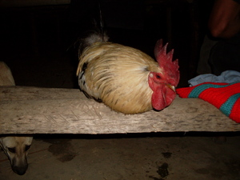

latun 
/latun/
v.
“land_after_flying”
1.
vi.
for a chicken or other bird (eglatun, miglatun/inlatun, latun, agent, eg><ø-) to perch on something (eglatunan, miglatunan/inlatunan/piglatunan, latuni, location, eg><an-) (usually on something high in the late afternoon)
Tagse iya maapun ne eglatun ka me manuk-manuk diyè te me kayu ne marani te ugpaan ney.
After the sun set the birds will perched on the trees near in our house.
Eng. perch; roost
OCM: Ethnozoology (825)
DDP: Animal actions (1.6.4), Animal home (1.6.5)
Online dict status: -
Usage level: M
vi.
for a spark (eglatun, agent, eg><ø-) to fly from a flint stone and land on the material to be lit
Eng. land
Online dict status: -
Usage level: M
Updated by: RJH,TME,QDL,NJK,RAA
Last updated: 18/Nov/2009
"latunan" in healthbook "Nekey-a ka kahew?"
"miglatunan" in healthbook "Nekey-a ka kahew?"
"kalatunan" in healthbook "Nekey-a ka kahew?"
This page last updated: 19/May/2012
Copyright © 2009-2010, Matigsalug Language Christian Association, Inc